Hepatic Safety Explorer: clinical guide
How to read the Hepatic Safety Explorer to review participant liver safety, and where each step lives in the controls on this page.
Exploratory review aid, not a validated diagnostic tool. A drug-induced-liver-injury conclusion is a diagnosis of exclusion that requires evidence beyond what this graphic shows.
What the eDISH plot shows
The Hepatic Safety Explorer is an interactive version of the eDISH ("evaluation of Drug-Induced Serious Hepatotoxicity") plot, conceived by Drs. Ted Guo and John Senior at the FDA to screen laboratory chemistry data for the pattern historically associated with serious drug-induced liver injury (Senior 2014). Each point is one study participant, placed at that participant's peak transaminase on the x-axis and peak total bilirubin on the y-axis. Both values are fold-change units, so a value of 3 means three times the upper limit of normal (ULN). Because the two peaks can occur on different study days, a single point summarizes a participant's worst observed liver chemistry over the whole study.
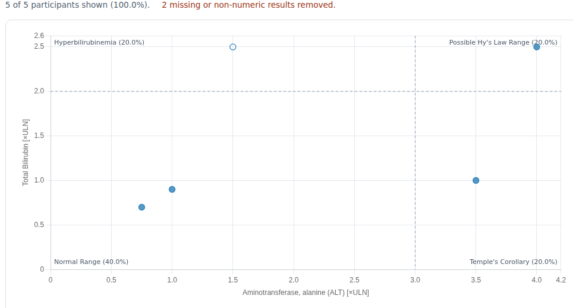
Two dashed cut-lines divide the plane into four quadrants. The vertical line sits at the transaminase threshold — ALT at 3x ULN by convention, chosen conservatively to preserve sensitivity — and the horizontal line at the total bilirubin threshold, 2x ULN. These cut-offs were not derived from data analyses; they follow the expert consensus of the 1978 Fogarty International Conference that ALT >3x ULN and total bilirubin >2x ULN are "markedly abnormal" (Davidson et al. 1979). The four quadrants read as follows:
- Normal (lower-left): neither transaminase nor bilirubin is meaningfully elevated.
- Isolated hyperbilirubinemia (upper-left): bilirubin is up but transaminase is not, which points away from hepatocellular injury and toward causes such as cholestasis, hemolysis, or benign unconjugated hyperbilirubinemia.
- Temple's Corollary / isolated ALT (lower-right): transaminase is elevated without qualifying bilirubin — hepatocellular injury without whole-liver dysfunction, which may still be serious and may progress into the Hy's-Law quadrant (an observation attributed to Dr. Robert Temple).
- Possible Hy's Law (upper-right): both transaminase and bilirubin are elevated, reflecting Dr. Hyman Zimmerman's observation that hepatocellular injury accompanied by jaundice carries a mortality of at least 10% (range 5–50%) (FDA 2009, Kaplowitz 2005).
A point in the upper-right quadrant is only a potential Hy's-Law case. The FDA definition requires three things (FDA 2009):
- A higher incidence of ALT or AST elevations
≥3xULN in the study drug arm than in the (non-hepatotoxic) control or placebo arm. - Some of those participants also show total bilirubin
>2xULN without initial findings of cholestasis (alkaline phosphatase, generally>2xULN). - No other explanation for the combined aminotransferase and bilirubin rise — viral hepatitis A/B/C, pre-existing or acute liver disease, or another drug capable of causing the injury.
Drug-induced liver injury (DILI) is a diagnosis of exclusion. The plot flags cases for review; it does not diagnose. Every upper-right case needs the evaluation below — and evidence beyond what this graphic shows, such as serology — before any conclusion is drawn.
How the evaluation workflow is organized
The workflow starts from a quadrant of interest and gathers evidence for or against a drug cause. It forks into three branches — potential Hy's Law, Temple's Corollary, and isolated hyperbilirubinemia — but each branch asks the same underlying question: is the timing, pattern, and magnitude of the liver signal consistent with drug injury, or is it better explained by the population, a competing diagnosis, or an artifact? Each step below pairs the manual's decision diagram with the clinical rationale and shows where the step lives in the controls on this page.
A few evaluation steps in the source workflow depend on data or displays that this release of safety.viz does not yet provide — the hepatocyte-loss estimate (P_ALT) and its exposure track, draggable cut-lines, the study-day animation, and bilirubin fractionation for isolated hyperbilirubinemia. Those steps are kept here for completeness and flagged where they appear, and are listed together in the deferred-features note near the end.
Hy's Law quadrant evaluation
Step 1 — Potential Hy's-Law cases and population confounders
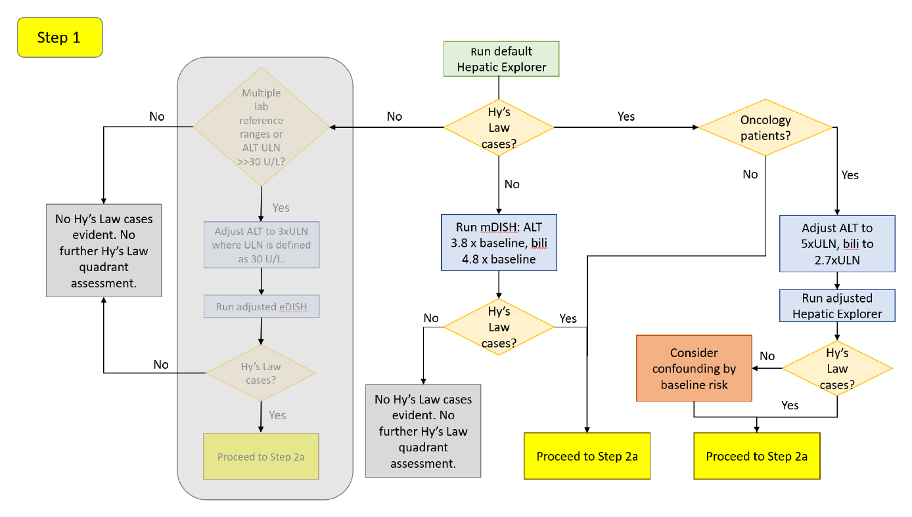
Load the dataset and let the tool plot with default settings. If no cases appear in the upper-right quadrant, do not conclude there is no signal yet: participants who begin treatment with low-normal chemistry can develop a large relative rise that never crosses an absolute ULN threshold. Re-examine the data on a baseline-corrected scale — mDISH (modified DISH), fold-change from each participant's own baseline — which is more sensitive to drug effects and more consistent across laboratories (Ozer et al. 2010, Lin et al. 2012), and is also appropriate in populations with pre-existing liver injury (Aithal et al. 2011). For a generally healthy study population, the recommended mDISH boundaries are 3.8x baseline for ALT and 4.8x baseline for total bilirubin (Lin et al. 2012). Set them in the X and Y Reference Line inputs after switching Display Type to mDISH. A single pre-dose value is not an ideal baseline given within-subject variation (Merz et al. 2014); if the dataset holds more than one pre-dose measurement, choose the more suitable one in the configuration and re-run. If mDISH still yields no potential Hy's-Law cases, no further analysis is needed.
If cases do appear, ask whether the population explains them. Oncology patients — especially with advanced disease — often carry elevated baseline transaminases and bilirubin from prior treatment or liver metastases, and may land in the Hy's-Law quadrant without drug injury. A review of oncology patients recommended raising the thresholds (Parks et al. 2013):
| Oncology population | ALT threshold | Total bilirubin threshold |
|---|---|---|
| No liver metastases | 4.8x ULN | 2.5x ULN |
| Known liver metastases | 5.5x ULN | 3.0x ULN |
| With or without liver metastases | 5.0x ULN | 2.7x ULN |
Set these in the X and Y Reference Line inputs. If the adjusted thresholds keep the same cases, proceed to Step 2a; if cases drop out, their initial appearance may have been confounding by the underlying disease, and you still proceed to Step 2a with that context. Other conditions can also raise transaminases or bilirubin — right heart failure/hypotension, connective-tissue disorders involving the liver, inflammatory bowel disease, non-alcoholic steatohepatitis, viral hepatitis, and total parenteral nutrition (Ozer et al. 2010) — but adjusted thresholds are not established for them; consult a hepatologist.
Step 2a — Timing coincidence and the cholestasis screen
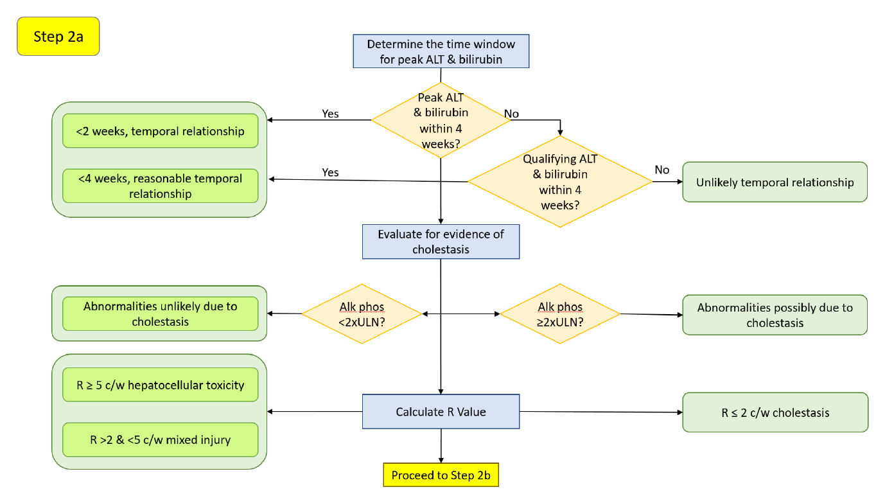
Only bilirubin elevations coincident with, or shortly after, the peak ALT elevation indicate loss of hepatic function from liver injury (Merz et al. 2014, Longo et al. 2017). There is no single standard interval, but peaks within 2 weeks are suggestive of DILI and up to 4 weeks may still indicate a drug effect. Assess this with the Highlight Points Based on Timing input (points render filled when the peaks fall within the window, hollow when they do not) or by clicking the point to read each peak's study day in the drill-down. A peak total bilirubin that precedes the peak ALT is not a typical hepatocellular pattern (Watkins et al. 2011). Because the plot positions cases by peak values, also consider "qualifying" values — those that cross the ULN threshold without being the peak (Merz et al. 2014); qualifying ALT and bilirubin within 2 weeks (bilirubin following the transaminase) are likewise suggestive.
Then screen for cholestasis: alkaline phosphatase (ALP) should stay below 2x ULN (Avigan 2010). Transaminase and bilirubin elevations meeting Hy's-Law criteria without a concomitant ALP rise point to hepatocellular injury. A coincident ALP elevation suggests a cholestatic component — though it does not by itself exclude a drug cause, and drug-related cholestatic injury remains possible. (ALP can also rise from infiltrative liver disease, tumors, and bone disease, which confound this read; AGA Clinical Practice Committee 2002.)
Characterize the injury pattern with the R-Ratio, R = (ALT/ULN) / (ALP/ULN) (Kullak-Ublick et al. 2017, Leise et al. 2014):
| R-Ratio | Injury pattern |
|---|---|
R > 5 | Hepatocellular |
R = 2–5 | Mixed hepatocellular / cholestatic |
R < 2 | Cholestatic |
Read the R-Ratio in the point tooltip, filter on it with the R-Ratio range control, or encode it as point size via Point Size → rRatio. A newer variant, nR, substitutes AST when AST gives the higher fold change so that AST-predominant injury is not missed (Robles-Diaz et al. 2014); this tool computes R from ALT, so nR is a manual calculation for now.
Step 2b — Onset window and rate of rise (ALT)
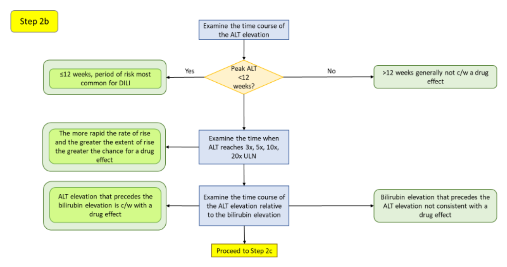
The first 12 weeks of dosing is generally the period of greatest hepatotoxicity risk (Hunt et al. 2007); peaks well beyond it are less often drug-attributable. Elevations in the first couple of weeks often reflect adaptation to drug load rather than true toxicity, especially at daily doses of several hundred milligrams and higher (Dara et al. 2016) — most participants with ALT elevations are not at risk and resolve despite continued exposure as the liver adapts, while failure to adapt drives severe idiosyncratic injury (Watkins 2005). Note that acute hepatobiliary obstruction (e.g., a gallstone) can cause an abrupt rise in transaminases, bilirubin, and ALP (Green & Flamm 2002). Read the rate of rise by clicking the point and noting when ALT reaches 3x, 5x, 10x, and 20x ULN in the Standardized Lab Values chart: the steeper the climb, the more acute the insult, and the more suggestive of a drug effect. Confirm the ALT rise precedes or coincides with the bilirubin rise.
Step 2c — Hepatocyte-loss magnitude (P_ALT)
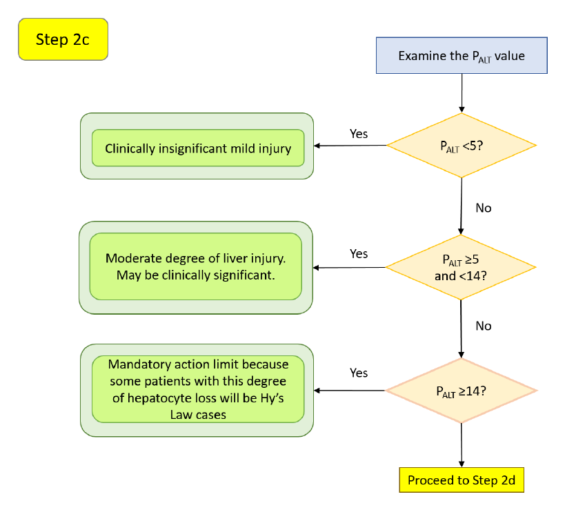
P_ALT estimates hepatocyte loss from peak ALT and the area under the serum-ALT curve, grading severity beyond raw peak ALT across different injury time courses (Chung et al. 2019). Calibrated against acetaminophen-overdose cases (roughly 10% hepatocyte loss is without clinical consequence; >60% can be fatal), its ranges read as:
| P_ALT | Interpretation |
|---|---|
< 5 | Clinically insignificant, mild injury (95% upper CI of hepatocyte loss <13%) |
≥ 5 and < 14 | Moderate injury, may be clinically significant — discontinue if peak ALT >5x ULN for >2 weeks, or ALT >3x ULN with fatigue, nausea, vomiting, right-upper-quadrant pain, fever, rash, eosinophilia (>5%), or INR >1.5 |
≥ 14 | May support injury sufficient for Hy's Law in some participants (95% upper CI approaching 30%) |
> 30 | Likely to lead to death (95% upper CI approaching 85%) |
P_ALT was developed on models of healthy livers and may not predict loss in children or patients with pre-existing liver disease. This estimate and its exposure track are not yet part of safety.viz — the step is included here for completeness and is planned for a later release.
Step 2d — Onset window and rate of rise (AST)
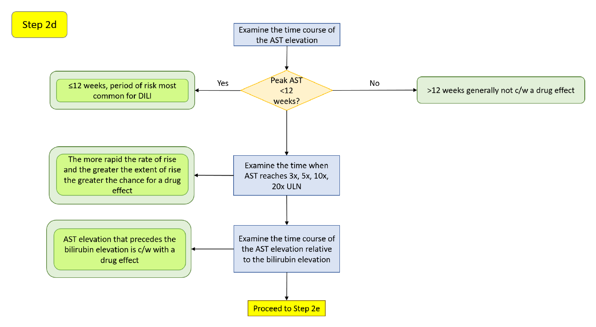
Switch the X-axis Measure to AST to interrogate the second transaminase. AST is a less specific liver biomarker — it is also found in heart, skeletal muscle, kidney, brain, and red cells, and occurs in the hepatic cytosol (≈20%) and mitochondria (≈80%) (Herlong & Mitchell 2012). As with ALT, the first 12 weeks is the highest-risk window (Hunt et al. 2007), early elevations may reflect adaptation (Dara et al. 2016), and the rate of rise across 3x, 5x, 10x, and 20x ULN speaks to how acute the insult is. A disproportionate AST rise should prompt a creatine phosphokinase (CPK) check to separate liver from muscle sources (EASL 2019). Apparent AST elevations can also be artifactual from sample hemolysis — an aberrantly high potassium is a reasonable flag (Trost 2015).
Step 2e — AST-versus-ALT pattern and resolution
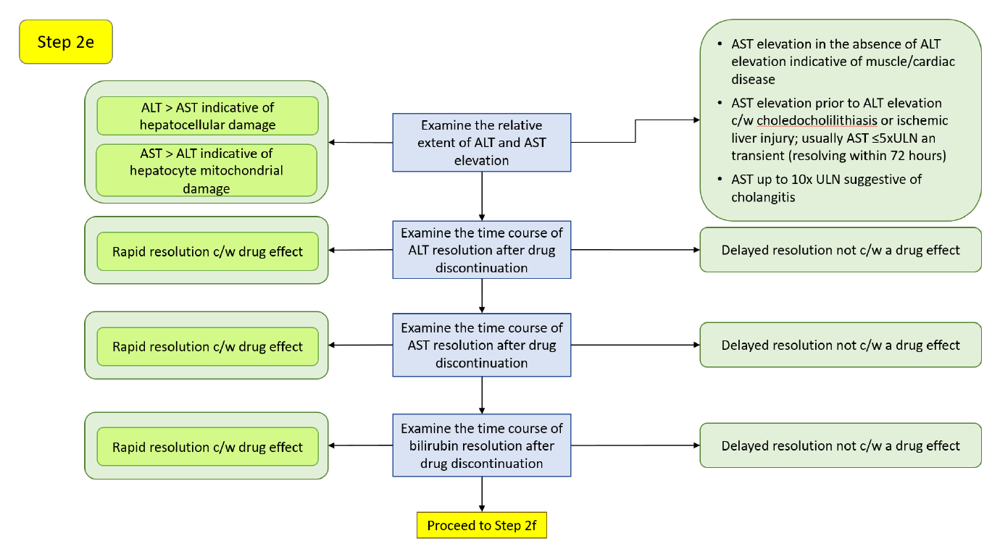
ALT elevation exceeding AST points to principally hepatocellular damage, whereas AST in excess of ALT can suggest mitochondrial injury (≈80% of AST activity is mitochondrial; Thapa & Walia 2007). Acute alcoholic hepatitis and cirrhosis often present with an AST/ALT ratio near 2:1 (Yang et al. 2014); a ratio >5, especially with normal or only slightly elevated ALT, suggests extrahepatic sources such as skeletal muscle (rhabdomyolysis, strenuous exercise) (Woreta & Alqahtani 2014). For alcoholic liver disease specifically, with AST <400 IU/L, an AST:ALT ratio >2 suggests and >3 is highly suggestive of it (Herlong & Mitchell 2012).
Resolution after drug discontinuation is diagnostic. The plasma half-lives are AST 17 ± 5 hours and ALT 47 ± 10 hours, so AST falls faster and ALT may exceed AST during recovery (Woreta & Alqahtani 2014). Rapid resolution after dechallenge is consistent with a drug effect; a slow decline is not. As a rule of thumb, ALT halving roughly every 2 days is consistent with cessation of hepatocellular damage, and AST every ≈1.5 days; slower declines suggest ongoing injury. Bilirubin resolves more slowly (Chalasani et al. 2008):
| DILI pattern | Peak → 50% reduction | Peak → <2.5 mg/dL |
|---|---|---|
| Hepatocellular | 14 days | 30 days |
| Cholestatic | 15 days | 45 days |
| Mixed | 22 days | 32 days |
Resolution may be slower in elderly patients.
Step 2f — Resolution with continued dosing, and additional considerations
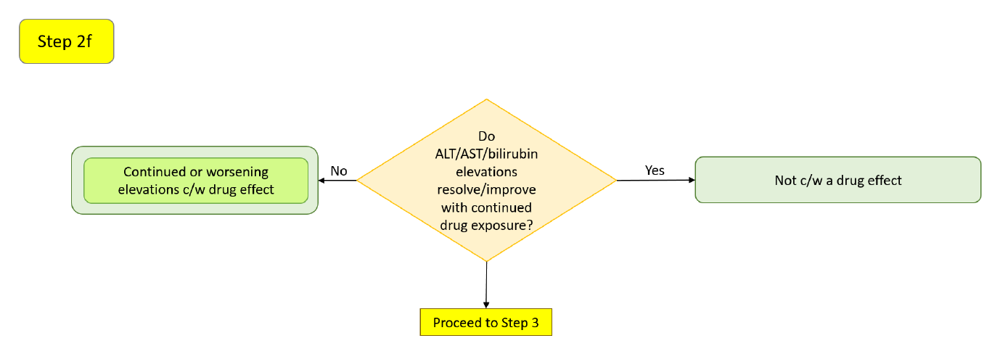
A drug may initially raise hepatic analytes that then resolve with continued therapy as the liver adapts (Shapiro & Lewis 2007, Abboud & Kaplowitz 2007, Dara et al. 2016) — or the abnormalities may have been unrelated to the drug. Two drug-level considerations weight the assessment: drugs whose hepatic metabolism accounts for ≥50% of elimination, and drugs cleared by both Phase 1 (cytochrome P450) and Phase 2 (conjugation) reactions, are more likely to cause ALT elevations ≥3x ULN and liver failure (Lammert et al. 2010); and an ALT ≥3x ULN rate ≥1.2% above placebo predicted a post-marketing liver-safety signal with a positive predictive value of 71.4% (Moylen et al. 2012). Use the Group color-by control and the categorical filters to compare arms.
Step 3
Reserved in the source workflow for a later version; not implemented here.
Temple's Corollary quadrant evaluation
A Temple's Corollary case is an isolated transaminase elevation without qualifying bilirubin — hepatocellular signal that has not (yet) produced jaundice, and that may progress into the Hy's-Law quadrant. The evaluation mirrors the Hy's-Law branch, without the bilirubin-coincidence step.
Step 4 — Temple's Corollary cases and population confounders
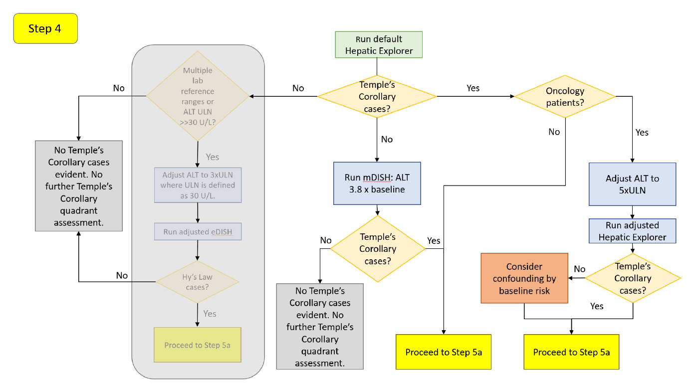
If no cases appear in the lower-right quadrant, re-run on the mDISH scale (3.8x baseline for ALT; Lin et al. 2012) for the same reason as Step 1 — low-baseline participants can have a large relative rise. If cases appear, adjust for oncology populations, this time on ALT alone (Parks et al. 2013): 4.8x ULN without liver metastases, 5.5x ULN with, and 5.0x ULN with or without. Set these in the X Reference Line. The same non-oncology confounders (right heart failure, connective-tissue disease, IBD, NASH, viral hepatitis, TPN) apply, without established adjusted thresholds.
Step 5a — The cholestasis screen and R-Ratio
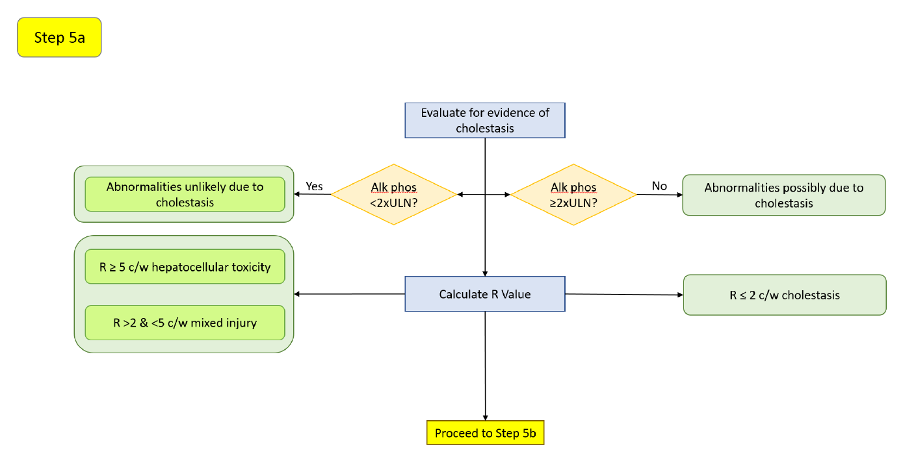
Transaminase elevation with ALP below 2x ULN (Avigan 2010) points to hepatocellular injury; a coincident ALP rise suggests a cholestatic source but does not exclude drug-related cholestatic injury. Characterize the pattern with the same R-Ratio bands as Step 2a (R > 5 hepatocellular, 2–5 mixed, < 2 cholestatic; Kullak-Ublick et al. 2017), read from the tooltip or the R-Ratio control.
Step 5b — Onset window and rate of rise (ALT)
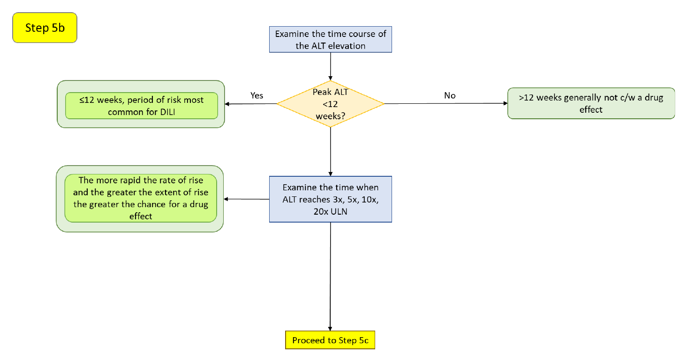
As in Step 2b: the first 12 weeks is the highest-risk window (Hunt et al. 2007), early elevations may reflect adaptation (Dara et al. 2016), and a steeper rise across 3x, 5x, 10x, and 20x ULN suggests a more acute, drug-related insult. Read the study days in the click-through Standardized Lab Values chart.
Step 5c — Hepatocyte-loss magnitude (P_ALT)
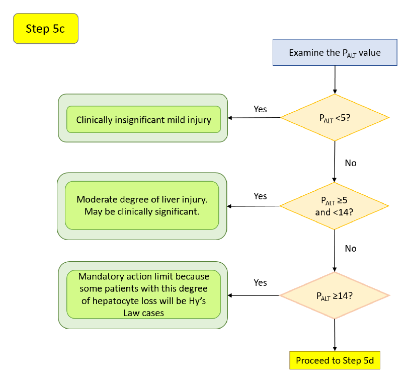
The same P_ALT grading as Step 2c applies (<5 mild, ≥5 and <14 moderate, ≥14 potentially Hy's-Law-capable, >30 likely fatal; Chung et al. 2019). This is especially relevant here: a Temple's Corollary case with a high P_ALT may represent hepatocyte loss sufficient to move into the Hy's-Law quadrant. P_ALT is not yet computed by safety.viz and is planned for a later release.
Step 5d — Onset window and rate of rise (AST)
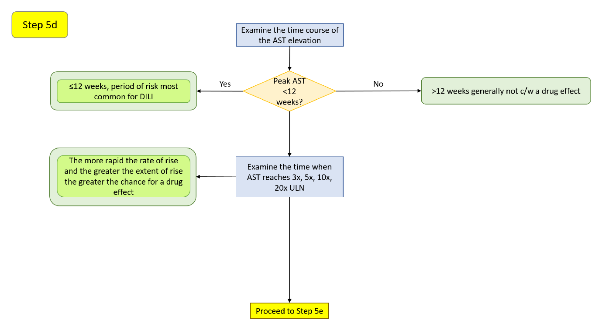
Switch the X-axis Measure to AST and repeat the onset-window and rate-of-rise reading of Step 2d. Recall that AST is less liver-specific; a disproportionate AST rise warrants a CPK check (EASL 2019), and an isolated AST elevation often reflects a non-hepatic source or sample hemolysis (Botros & Sikaris 2013).
Step 5e — AST-versus-ALT pattern and resolution
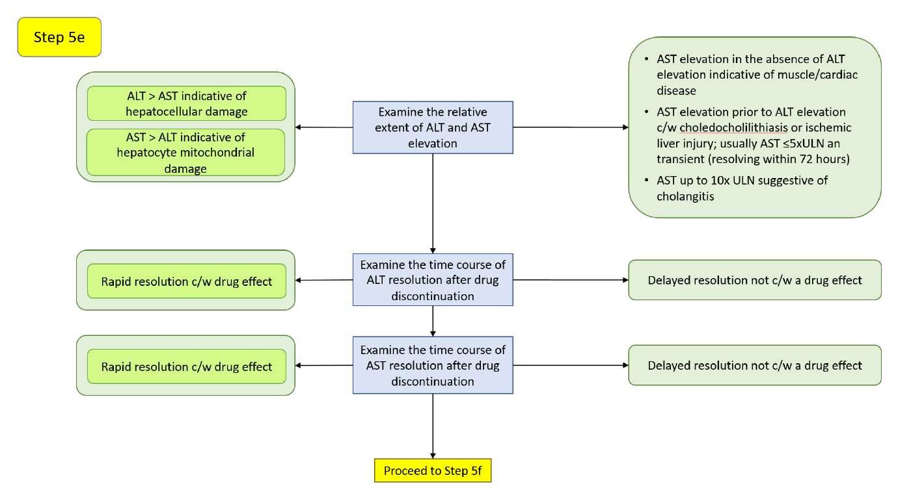
The AST:ALT relationship and dechallenge behavior read as in Step 2e: ALT > AST favors hepatocellular injury, AST > ALT suggests mitochondrial or extrahepatic sources, and rapid resolution after discontinuation (AST half-life 17 ± 5 h, ALT 47 ± 10 h) supports a drug effect while a slow decline argues against one (Woreta & Alqahtani 2014). An AST component that stays elevated above ALT may reflect ongoing hepatocyte damage or mitochondrial AST release (Robles-Diaz et al. 2014).
Step 5f — Resolution with continued dosing, and additional considerations
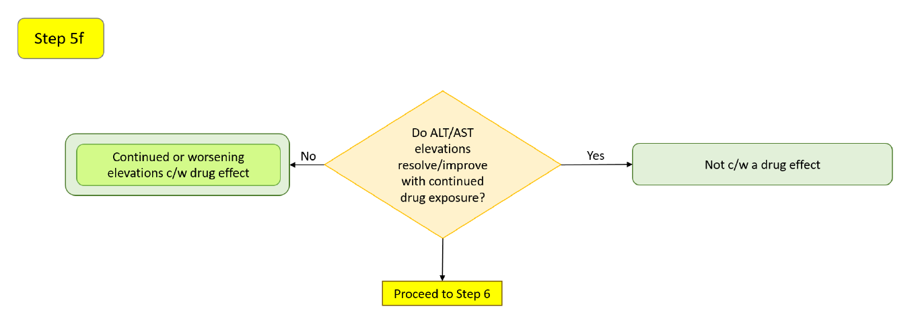
As in Step 2f: elevations may resolve with continued therapy through adaptation (Dara et al. 2016), extensive hepatic metabolism (≥50% of elimination; both Phase 1 and Phase 2) raises the risk of ALT ≥3x ULN (Lammert et al. 2010), and an ALT ≥3x ULN rate ≥1.2% above placebo predicts a liver-safety signal (Moylen et al. 2012).
Step 6
Reserved in the source workflow for a later version; not implemented here.
Isolated hyperbilirubinemia quadrant evaluation
An isolated hyperbilirubinemia case is a bilirubin elevation without transaminase elevation. It often has a non-hepatocellular explanation — cholestasis, hemolysis, or benign unconjugated hyperbilirubinemia — but drug-related mechanisms exist, and the fractionation step below is what distinguishes them.
Step 7 — Hyperbilirubinemia cases and population confounders
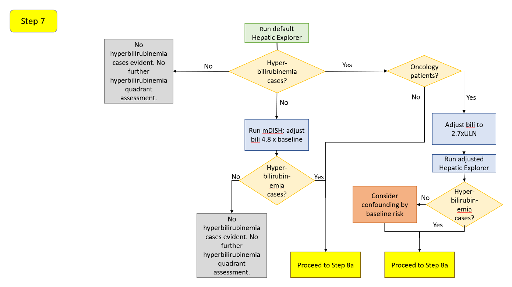
If no cases appear in the upper-left quadrant, re-run on the mDISH scale (4.8x baseline for total bilirubin; Lin et al. 2012). If cases appear, adjust the total-bilirubin threshold for oncology populations (Parks et al. 2013): 2.5x ULN without liver metastases, 3.0x ULN with, and 2.7x ULN with or without. Set these in the Y Reference Line. The same non-oncology confounders apply; note that the ischemic hepatitis of right heart failure raises unconjugated bilirubin in 24–81% of cases (Dunn et al. 1973), which is exactly what fractionation (Step 8c) resolves.
Step 8a — The cholestasis screen and R-Ratio
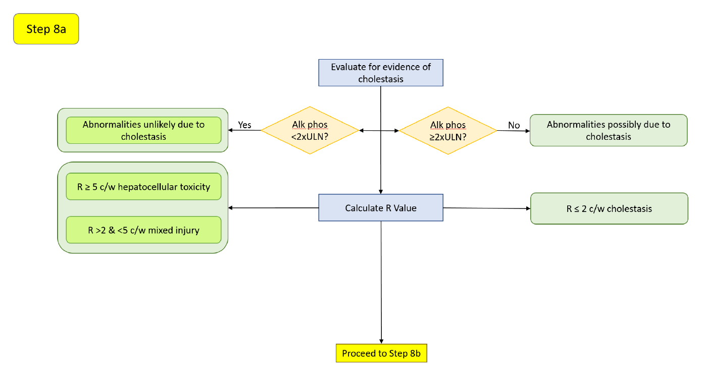
Bilirubin elevation with ALP below 2x ULN (Avigan 2010) is more indicative of hepatocellular injury; a coincident ALP rise suggests a cholestatic source of the bilirubin, without excluding drug-related cholestatic injury. The R-Ratio bands (Kullak-Ublick et al. 2017) characterize the pattern as before.
Step 8b — Onset window and resolution (bilirubin)
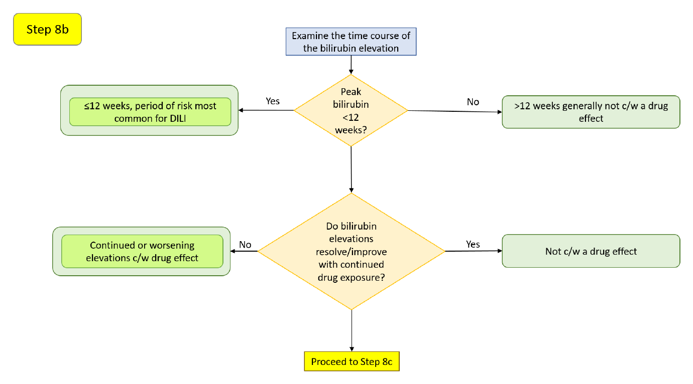
The first 12 weeks is again the highest-risk window (Hunt et al. 2007); acute hepatobiliary obstruction (e.g., a gallstone) can cause an abrupt rise in bilirubin and ALP (Green & Flamm 2002). As in the other branches, a bilirubin elevation that resolves with continued therapy may reflect adaptation or an unrelated cause (Dara et al. 2016).
Step 8c — Conjugated versus unconjugated bilirubin
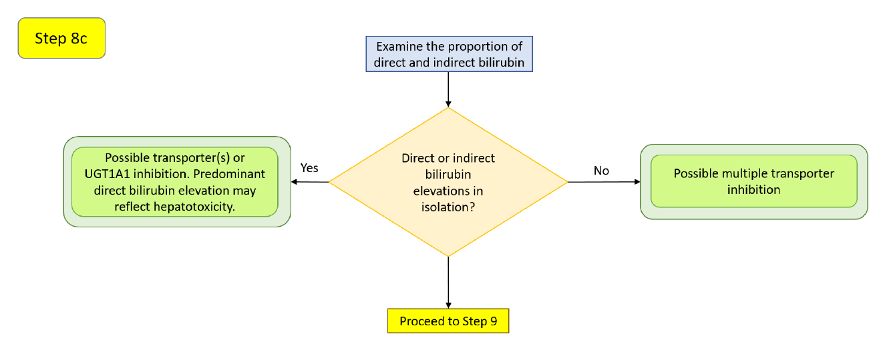
Fractionating the bilirubin rise points to a mechanism (Chu et al. 2017). An isolated unconjugated (indirect) elevation can come from inhibition of the uptake transporters OATP1B1/OATP1B3 or of UGT1A1, the conjugating enzyme — and always warrants ruling out increased production from hemolysis (Ah et al. 2008). An isolated conjugated (direct) elevation can come from inhibition of the canalicular efflux transporter MRP2. Elevation of both suggests inhibition of multiple transporters (OATP1B1/1B3 and MRP2), possibly with a UGT1A1 contribution. In genuine DILI, total-bilirubin elevations are generally predominantly conjugated (Hunt et al. 2007), often without cholestatic evidence until a later stage (Trost 2015). This step depends on direct and indirect bilirubin being present in the dataset; safety.viz surfaces those as additional measures in the drill-down when the uploaded data includes them.
Step 9
Reserved in the source workflow for a later version; not implemented here.
Abbreviated potential Hy's-Law evaluation
For a rapid triage of which cases merit referral to a hepatic board, the manual's one-page shortcut asks: If the ALT elevation is >3x ULN and total bilirubin >2x ULN, and these occur within 4 weeks of each other, and the ALT elevation precedes the bilirubin, and alkaline phosphatase is <2x ULN — then the case may represent a potential Hy's-Law case and should be referred for more detailed evaluation. This is a screen, not a conclusion; the full workflow above supplies the supporting evidence.
How this maps to the controls on this page
- Named quadrants and per-quadrant counts → the quadrant overlay with named corners, live per-quadrant percentages, and the Quadrant / # / % summary table.
- Moving the ALT and bilirubin thresholds → the X and Y Reference Line number inputs, which reposition the two dashed cut-lines and reclassify points live.
- Baseline-corrected (mDISH) reasoning → the Display Type toggle, eDISH (÷ ULN) versus mDISH (÷ day-0 baseline).
- Which analyte is on each axis → the measure pickers for ALT, AST, total bilirubin, and ALP, plus the linear/log Axis Type toggle.
- Timing coincidence between peaks → the timing-window days input, which fills in-window points and hollows out-of-window ones, alongside the day-gap in the tooltip.
- Injury pattern (hepatocellular versus cholestatic) → the R-Ratio value in the tooltip and the R-Ratio range filter; point size can also encode R-Ratio via the Point Size toggle (Uniform / rRatio).
- Onset window and rate of rise → click a point to open the Standardized Lab Values by Study Day chart and read each peak's study day.
- AST corroboration and per-measure detail → the same drill-down, with its Measure / N / Min / Median / Max summary table and linked record listing; direct/indirect bilirubin and other analytes appear here when present in the data.
- Population and subgroup context → the Group color-by control with its legend, plus the categorical data filters.
The Migration (Sankey) view — comparing arms before reviewing cases
The View control offers a third top-level view, Migration (Sankey), which reproduces Figure 3 of Amirzadegan et al., _"Emerging Tools to Support DILI Assessment in Clinical Trials with Abnormal Baseline Serum Liver Tests or Pre-existing Liver Diseases"_, Drug Safety 2025;48(5):443–453. It answers a different question from the scatter: not _who_ is in the Hy's-Law quadrant, but _how the two arms moved_ between baseline and peak on-treatment.
How to read it. The centre column is every participant's baseline eDISH categorization. Placebo-arm flows run left from the centre; active-drug flows run right. Ribbon thickness is participant count, on a single shared scale across both arms and all three columns — so a thicker ribbon always means more participants, wherever it is drawn. Nodes stack by severity with Hy's Law at the top and Normal & NN at the bottom, so an unfavourable shift reads as upward travel and is painted pink; a favourable shift travels downward and is painted green.
Colour comes from the medicine, not the geometry. A ribbon's fill is derived from the FDA concern matrix (concernOf(baseline, on-treatment)), never from the sign of its vertical travel. Cholestasis and Temple's Corollary therefore share one severity tier, drawn as adjacent sub-nodes under a single _Single-analyte elevation_ label: the concern matrix deliberately declines to rank them against each other, and stacking them apart would draw a neutral shift as an upward one.
Cutpoints are fixed here. The migration view classifies with the FDA constants ALT > 3× ULN and TB > 2× ULN — the same thresholds as the composite plot, and faithful to the paper. The scatter view's user-adjustable Reference Line inputs do not apply to it.
Arms are structural. The diagram needs a treatment-arm column (arm_col, auto-detected across ARM, ACTARM, TRT01A, TREATMENT), one arm designated placebo (placebo_arm, else auto-detected against /placebo|control/i) and one or more designated active (active_arms, else every non-placebo arm pools right). Participants in an arm designated neither are excluded and counted in the notes rather than silently pooled, and with no arm column at all the Migration option is disabled with an explanation instead of rendering an empty diagram.
Cross tables. Below the diagram, one cross table per arm gives the paper's printed counts: rows = baseline quadrant, columns = peak on-treatment quadrant, both in severity order so they read the same direction as the plot, with row/column/grand totals and every cell shaded by level of concern. Cell counts and ribbon counts are the same numbers from the same index, and clicking either selects the same participants.
The two-step hand-off. The paper frames "Sankey then composite" as a deliberate two-step replacement for the single eDISH plot: the Sankey delivers _visualise shift between arms_ and _categorise by severity_, but not _identify individual participants for case review_. So selecting a ribbon (click, Enter or Space — every ribbon is a focusable button with a spoken name) states the shift in the footnote and offers Review these N in the composite plot, which switches to the composite view with exactly those participants restored and highlighted in every panel.
One caution the paper asks for. A grey Hy's Law → Hy's Law band looks reassuring, but it is precisely where the paper's acknowledged limitation lives: a shift view cannot detect worsening _within_ a category, and this is the most severe one. When that cell is non-empty the view says so and offers to select those participants for individual review.
What is not yet on this page
A few steps in the source workflow depend on capabilities planned for a later safety.viz release, so no control corresponds to them today:
- Hepatocyte-loss estimate (
P_ALT) and its exposure track — Steps 2c / 5c. - Bilirubin fractionation as a first-class view — Step 8c reads direct/indirect bilirubin only when the uploaded dataset includes those measures.
- Draggable cut-lines — reposition the reference lines with the numeric inputs for now.
- Study-day animation with motion trails — the static visit-path overlay and the Standardized Lab Values chart cover the trajectory-over-time need.
- The new ratio (
nR) — computed manually; the tool reports the ALT-based R-Ratio.
Try it in the demo
Open the live demo and work a few of the steps against real data.
- Switch the Display Type from eDISH to mDISH to see who moves into the upper-right quadrant once values are read against each participant's own baseline.
- Nudge the X (ALT) Reference Line upward toward an oncology-adjusted value and watch the per-quadrant percentages update as points are reclassified.
- Set an R-Ratio range filter to isolate the hepatocellular cases (
R > 5) from mixed and cholestatic ones. - Click a point in the possible Hy's-Law quadrant to open its lab trajectory, then check whether the transaminase and bilirubin peaks fall within a few weeks of each other and whether ALP stayed below
2xULN. - Switch the View control to Migration (Sankey). The demo designates the synthetic chronic-liver-disease cohort's arms (
CLD: PlaceboversusCLD: Study Drug), so the pilot participants fall out with a counted exclusion note — read the pink ribbons on each side, then click one and take Review these N in the composite plot to see the same participants as individual cases.
Source and attribution
This guide ports the workflow and clinical rationale of the "Interactive Safety Graphic — Hepatic Safety Explorer User's Manual" (v1.2.1), a product of the DIA-ASA Interactive Safety Graphics Working Group, which authored the manual and authorized this migration. The decision diagrams above are reproduced from that manual; the surrounding text follows its evaluation steps and interpretive guidance. For the complete manual with full clinical detail, see the authoritative source: HepExplorerWorkflow v1.2.1 (PDF).
References
- Abboud G, Kaplowitz N. Drug-induced liver injury. _Drug Saf._ 2007;30:277–294.
- Ah YM, Kim YM, Kim MJ, et al. Drug-induced hyperbilirubinemia and the clinical influencing factors. _Drug Metab Rev._ 2008;40:511–537.
- Aithal GP, Watkins PB, Andrade RJ, et al. Case definition and phenotype standardization in drug-induced liver injury. _Clin Pharmacol Ther._ 2011;89:806–815.
- American Gastroenterological Association Clinical Practice Committee. AGA technical review on the evaluation of liver chemistry tests. _Gastroenterology_ 2002;123:1367–1384.
- Andrade RJ, Lucena MI, Fernandez MC, et al. Drug-induced liver injury: an analysis of 461 incidences submitted to the Spanish registry over a 10-year period. _Gastroenterology_ 2005;129:512–521.
- Avigan M. FDA Guidance on Pre-Marketing Evaluation of DILI: Elements & Ongoing Debatable Issues. FDA/CDER–AASLD–PhRMA Hepatotoxicity Steering Group. 25 March 2010.
- Bjornsson E, Olsson R. Outcome and prognostic markers in severe drug-induced liver disease. _Hepatology_ 2005;42:481–489.
- Botros M, Sikaris KA. The De Ritis ratio: the test of time. _Clin Biochem Rev._ 2013;34:117–130.
- Chalasani N, Fontana RJ, Bonkovsky HL, et al. Causes, clinical features and outcomes from a prospective study of drug-induced liver injury in the United States. _Gastroenterology_ 2008;135:1924–1934.
- Chalasani NP, Hayashi PH, Bonkovsky HL, et al. ACG clinical guideline: the diagnosis and management of idiosyncratic drug-induced liver injury. _Am J Gastroenterol._ 2014;109:950–966.
- Chu X, Chan GH, Evers R. Identification of endogenous biomarkers to predict the propensity of drug candidates to cause hepatic or renal transporter-mediated drug-drug interactions. _J Pharm Sci._ 2017;106:2357–2367.
- Chung JY, Longo DM, Watkins PB. A rapid method to estimate hepatocyte loss due to drug-induced liver injury. _Clin Pharmacol Ther._ 2019;105:746–753.
- Dara L, Liu ZX, Kaplowitz N. Mechanisms of adaptation and progression in idiosyncratic drug-induced liver injury, clinical implications. _Liver Int._ 2016;36:158–165.
- Davidson CS, Leevy CM, Chamberlayne EC, editors. Guidelines for Detection of Hepatotoxicity due to Drugs and Chemicals. [Fogarty Conference, 1978] NIH Publication No. 79-313. 1979.
- Dunn GD, Hayes P, Breen KJ, Schenker S. The liver in congestive heart failure: a review. _Am J Med Sci._ 1973;265:174–189.
- European Association for the Study of the Liver. EASL clinical practice guidelines: drug-induced liver injury. _J Hepatol._ 2019;70:1222–1261.
- Food and Drug Administration. Guidance for Industry — Drug-Induced Liver Injury: Premarketing Clinical Evaluation. July 2009.
- Green RM, Flamm S. AGA technical review on the evaluation of liver chemistry tests. _Gastroenterology_ 2002;123:1367–1384.
- Herlong HF, Mitchell MC. Laboratory tests. In: _Schiff's Diseases of the Liver_, 11th ed. Wiley; 2012:17–43.
- Hunt CM, Papay JI, Edwards RI, et al. Monitoring liver safety in drug development: the GSK experience. _Regul Toxicol Pharmacol._ 2007;49:90–100.
- Kaplowitz N. Idiosyncratic drug hepatotoxicity. _Nat Rev Drug Discov._ 2005;4:489–499.
- Kullak-Ublick GA, Andrade RJ, Merz M, et al. Drug-induced liver injury: recent advances in diagnosis and risk assessment. _Gut_ 2017;66:1154–1164.
- Lammert C, Bjornsson E, Niklasson A, Chalasani N. Oral medications with significant hepatic metabolism at higher risk for hepatic adverse events. _Hepatology_ 2010;51:615–620.
- Leise MD, Poterucha JJ, Talwalkar JA. Drug-induced liver injury. _Mayo Clin Proc._ 2014;89:95–106.
- Lin X, Parks D, Painter J, et al. Validation of multivariate outlier detection analyses used to identify potential drug-induced liver injury in clinical trial populations. _Drug Saf._ 2012;35:865–875.
- Longo DM, Generaux GT, Howell BA, et al. Refining liver safety risk assessment: application of mechanistic modeling and serum biomarkers to cimaglermin alfa (GGF2) clinical trials. _Clin Pharmacol Ther._ 2017;102:961–969.
- Merz M, Lee KR, Kullak-Ublick GA, et al. Methodology to assess clinical liver safety data. _Drug Saf._ 2014;37(Suppl 1):S33–S45.
- Moylen CA, Suzuki A, Papay JI, et al. A pre-market ALT signal predicts post-marketing liver safety. _Regul Toxicol Pharmacol._ 2012;63:433–439.
- Ozer JS, Chetty R, Kenna G, et al. Enhancing the utility of alanine aminotransferase as a reference standard biomarker for drug-induced liver injury. _Regul Toxicol Pharmacol._ 2010;56:237–246.
- Parks D, Lin X, Painter JL, et al. A proposed modification to Hy's law and eDISH criteria in oncology clinical trials using aggregated historical data. _Pharmacoepidemiol Drug Saf._ 2013;22:571–578.
- Robles-Diaz M, Lucena MI, Kaplowitz N, et al. Use of Hy's law and a new composite algorithm to predict acute liver failure in patients with drug-induced liver injury. _Gastroenterology_ 2014;147:109–118.
- Senior JR. Evolution of the FDA approach to liver safety assessment for new drugs: current status and challenges. _Drug Saf._ 2014;37(Suppl 1):S9–S17.
- Shapiro MA, Lewis JH. Causality assessment of drug-induced hepatotoxicity: promises and pitfalls. _Clin Liver Dis._ 2007;11:477–505.
- Thapa BR, Walia A. Liver function tests and their interpretation. _Indian J Pediatr._ 2007;74:663–671.
- Trost DC. Hepatotoxicity. In: _Statistical Methods for Evaluating Safety in Medical Product Development_, 1st ed. Wiley; 2015:229–270.
- Watkins PB. Idiosyncratic liver injury: challenges and approaches. _Toxicol Pathol._ 2005;33:1–5.
- Watkins PB, Desai M, Berkowitz SD, et al. Evaluation of drug-induced serious hepatotoxicity (eDISH). _Drug Saf._ 2011;34:243–252.
- Woreta TA, Alqahtani SA. Evaluation of abnormal liver tests. _Med Clin North Am._ 2014;98:1–16.
- Yang X, Schnackenberg LK, Shi Q, Salminen WF. Hepatic toxicity biomarkers. In: _Biomarkers in Toxicology._ Elsevier; 2014:241–259.
- Zimmerman HJ. _Hepatotoxicity: The Adverse Effects of Drugs and Other Chemicals on the Liver._ Appleton-Century-Crofts; 1978.